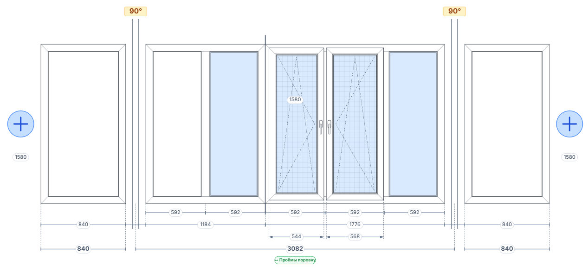

Квартиры · Дома · ТеррасыОстекление
Для компаний, которые остекляют квартиры, частные дома, коттеджи и террасы.
От проекта конструкций и расчёта стоимости — до материалов, монтажа и оплат.
Что внутри продукта
- Проектирование остекления и параметры конструкций.
- Расчёт стоимости по вашим ценам и условиям.
- Потребность в материалах, документы и задачи.
- Заказы, оплаты и управленческий учёт.